11/9（日）台北 → 香港 → 夜航往奧克蘭
✈️ 飛行 9,974 km
- 🚩台北出發
- ↔️移動 850 m・11 分Google 未判定方式
- 🚆機場捷運 49 km・46 分
- 📍桃園國際機場2 小時 50 分
- ✈️桃園 → 香港 806 km・2 小時 8 分
- 📍香港國際機場（轉機）3 小時 31 分在機場貴賓室
- ✈️香港 → 奧克蘭（夜航） 9,168 km・10 小時 57 分隔天 13:22 抵達，紐西蘭時間
基督城進出，逆時針繞南島：Twizel 看庫克山、翻 Lindis Pass 到 Wanaka，皇后鎮連住兩晚跑 Glenorchy，從 Te Anau 進米佛峽灣，再經但尼丁、Oamaru 回基督城。全部依 Google 地圖時間軸整理。
去程台北 → 香港 → 奧克蘭 → 基督城；回程基督城 → 香港 → 桃園。時間都是當地時間，紐西蘭（夏令）比台灣快 5 小時。
基督城→Geraldine→11/11 晚・11/12 未記錄→Twizel ×2→Wanaka→皇后鎮 ×2→Te Anau ×2→但尼丁→Oamaru→基督城機場
道路線是用 OSRM 依每天的停留點重算的；虛線是沒有截圖的日子，只能照主要道路推估。點按日期可以放大那一天。
兩邊都用 Google 地圖時間軸記到的「開車」里程與時間；Google 常把短暫停留併進車程、也常少記里程，所以紐西蘭另列 OSRM 道路距離當對照。
| 🇳🇿 紐西蘭南島2025/11 | 🇹🇼 台灣東部環島2026/10 | |
|---|---|---|
| 自駕天數 | 12 天（11/10 晚上–11/21） | 10 天（10/3–10/12） |
| 每天平均Google 開車紀錄 | 183 km・3 小時 54 分整天自駕、截圖完整的 8 天（不含 11/10 抵達當晚） | 119 km・2 小時 59 分10 天 |
| 平均車速Google 里程 ÷ 時間 | 47 km/h | 40 km/h |
| 最遠的一天 | 11/19 Te Anau → 但尼丁 283 km・4 小時 48 分OSRM 道路距離 311 km | 10/11 高雄 → 中部 229 km・4 小時 19 分 |
| 開最久的一天 | 11/14 Twizel → Wanaka 190 km・5 小時 23 分Google 時間應含中途停留；其次 11/21 Oamaru → 基督城 5 小時 17 分 | 10/10 船帆石 → 高雄 168 km・5 小時 21 分 |
| 全程里程 | 1,900 km 以上OSRM 依停留點推算的下限，沒截圖的 2 天半只算最短路線 | 1,186 kmGoogle 紀錄，實際應更多 |
照 Google 地圖時間軸逐段列出；開車、步行列成灰色小字。Google 判錯或沒認出的地方照實寫並加註。
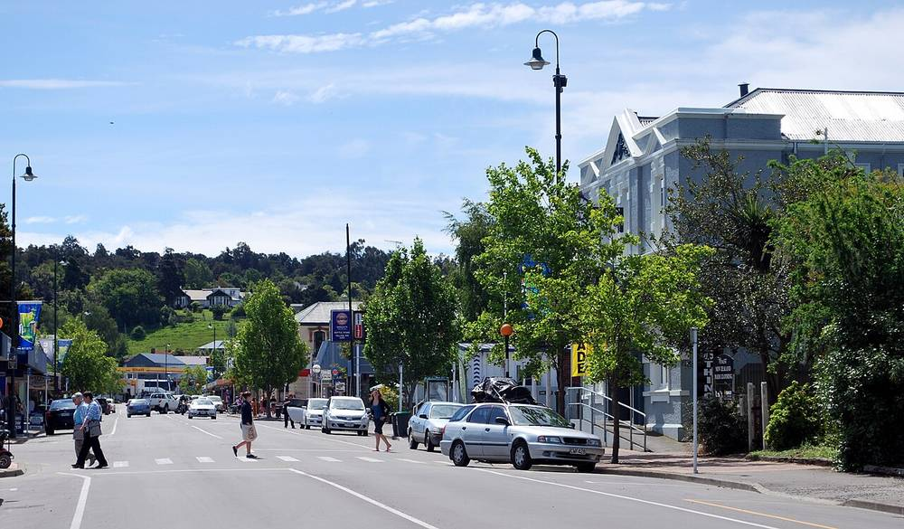
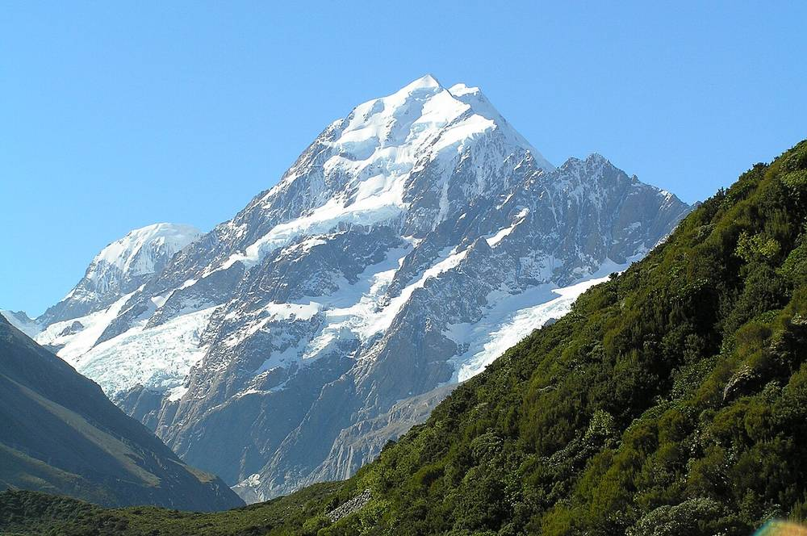
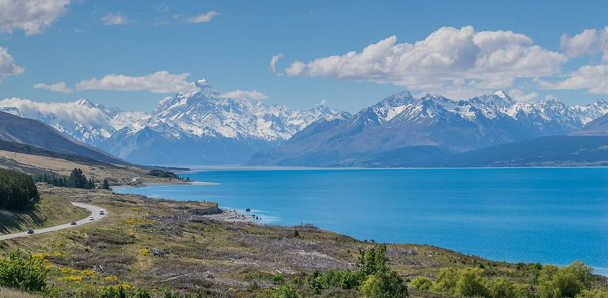
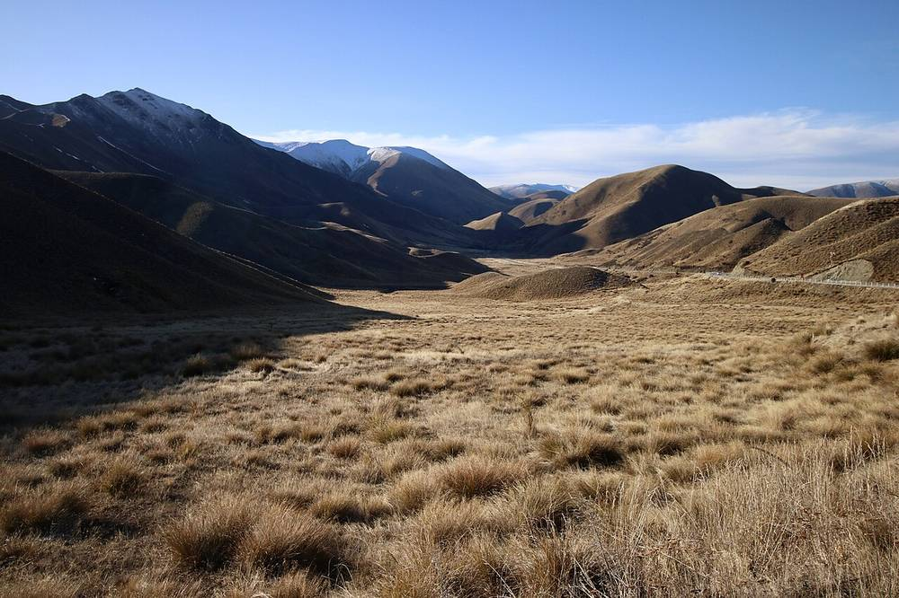
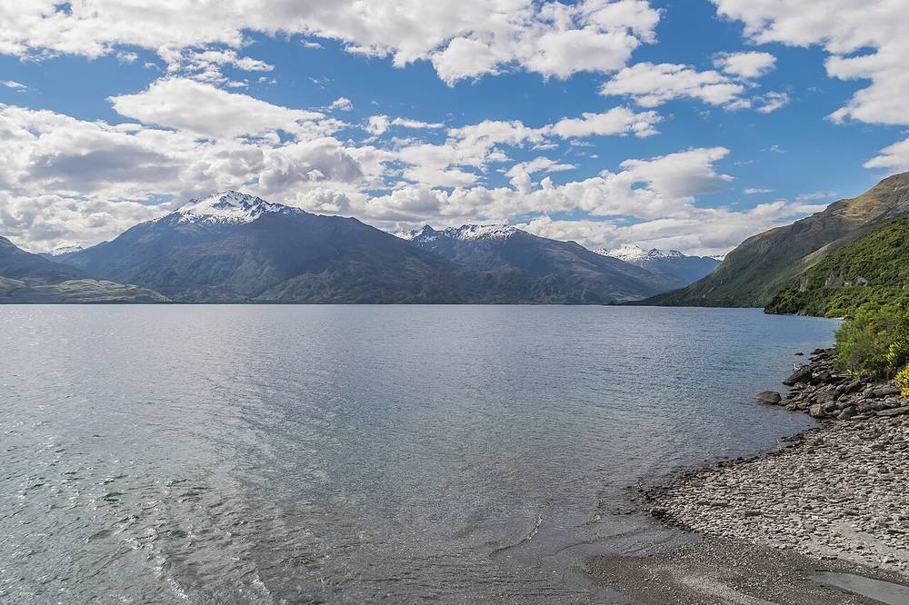
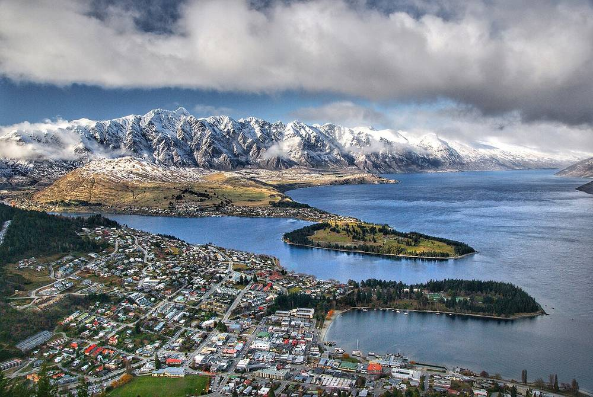
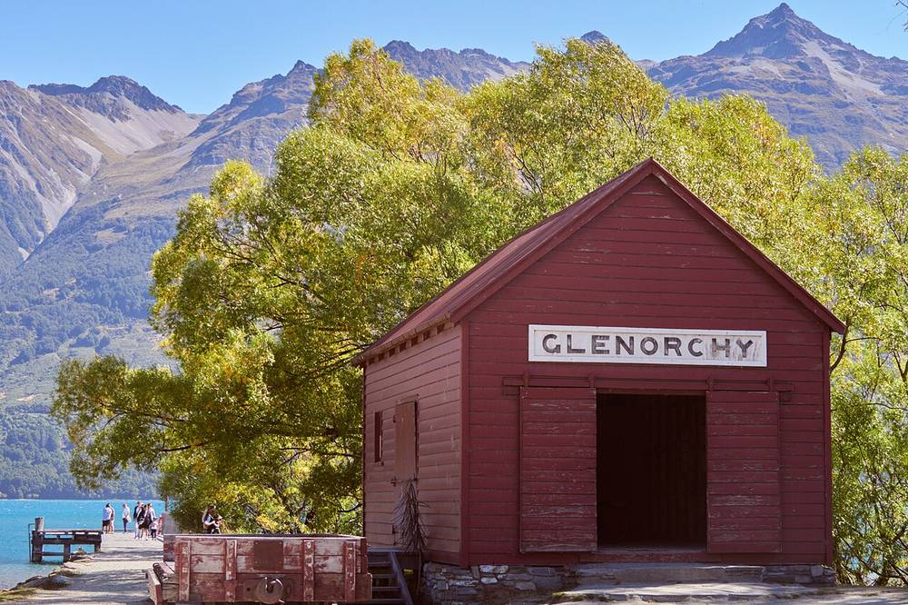
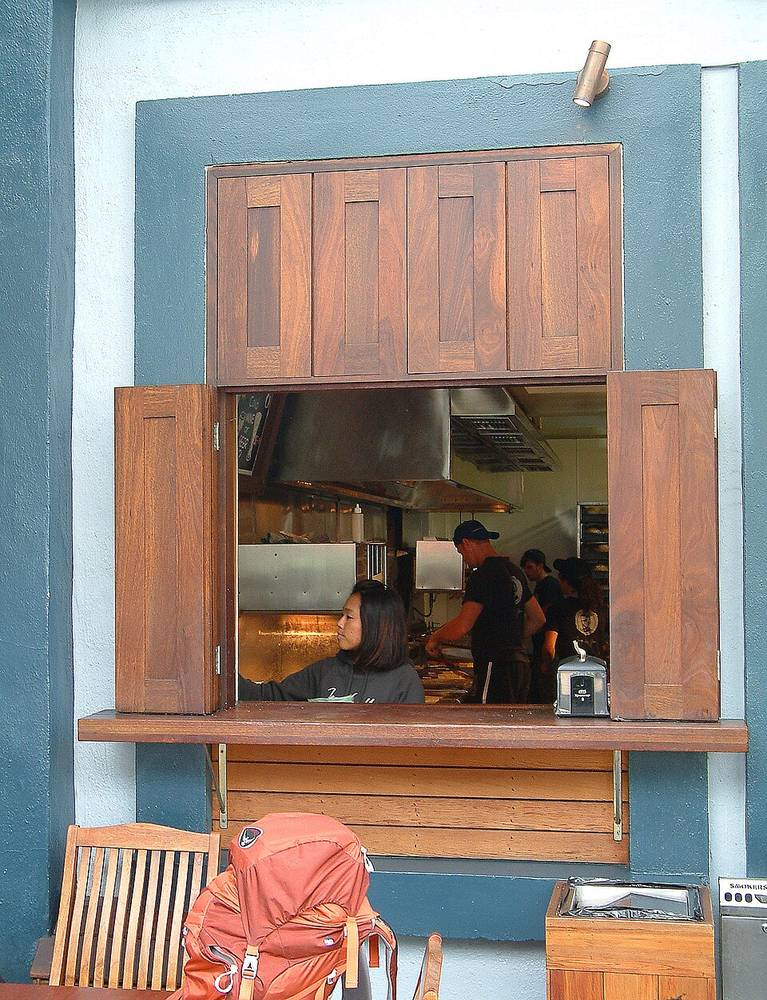
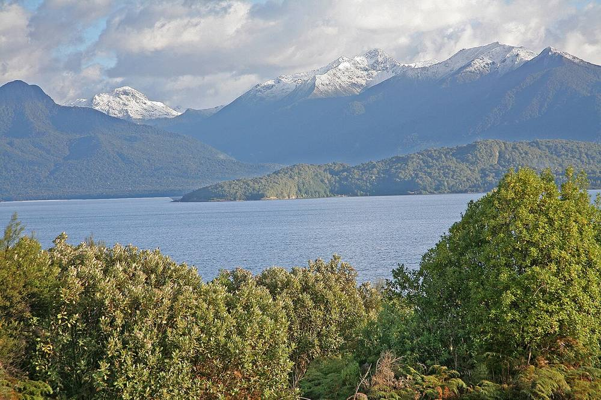
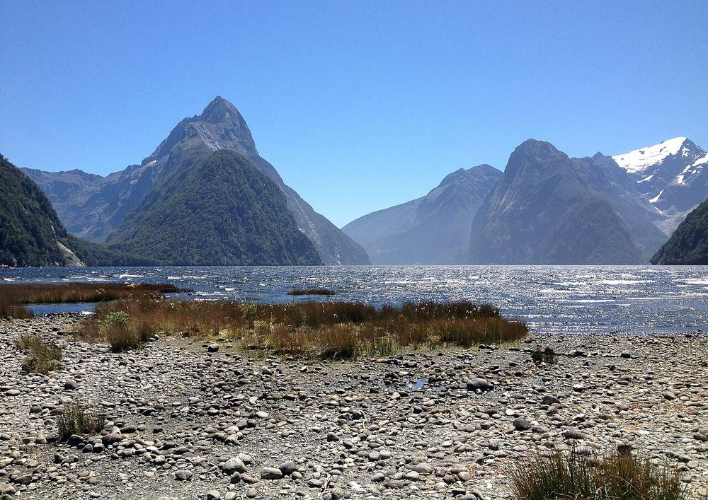
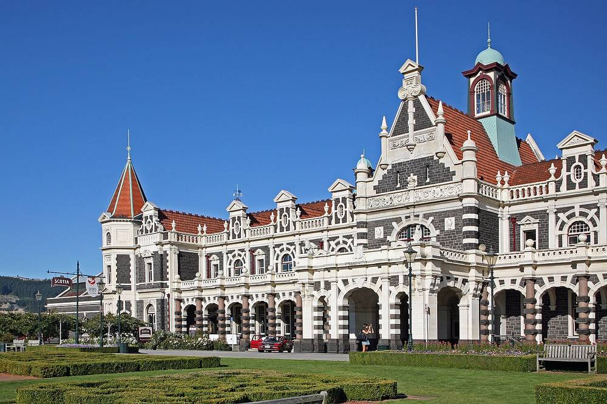
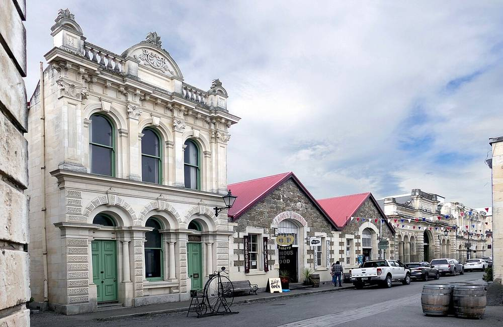
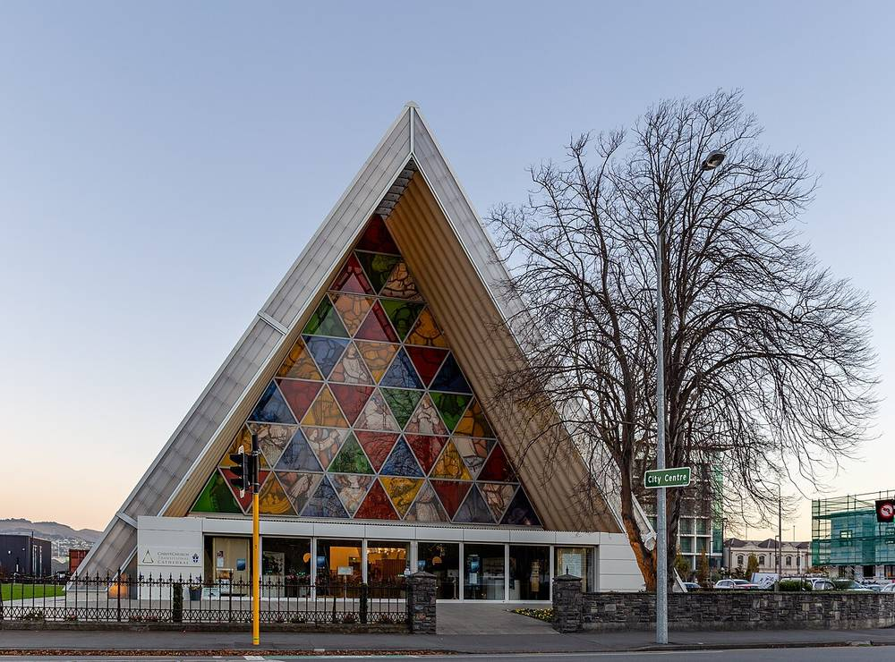
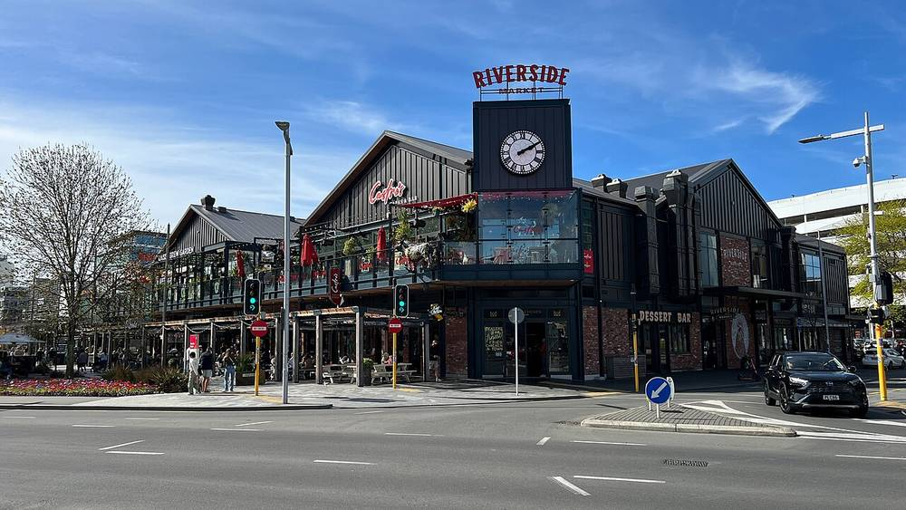
民宅只寫到區，不寫門牌。
| 晚 | 住哪裡 |
|---|---|
| 11/9 | ✈️ 機上（香港 → 奧克蘭） |
| 11/10 | 🏠 基督城 Riccarton 一帶・民宅 |
| 11/11 | ❔ 未記錄（截圖沒有提供） |
| 11/12 | 🏠 Twizel・民宅 |
| 11/13 | 🏠 Twizel・民宅（續住） |
| 11/14 | 🏠 Wanaka・民宅 |
| 11/15 | 🏠 皇后鎮 Shotover Country 一帶・民宅 |
| 11/16 | 🏠 皇后鎮・民宅（續住） |
| 11/17 | 🏕️ Te Anau Lakeview Holiday Park |
| 11/18 | 🏕️ Te Anau Lakeview Holiday Park（續住） |
| 11/19 | 🏠 但尼丁 Mosgiel 一帶・民宅 |
| 11/20 | 🏕️ Oamaru Harbour Tourist Park |
| 11/21 | 🏨 LyLo Christchurch Airport（機場膠囊旅館） |
| 11/22 | ✈️ 機上（香港 → 桃園），11/23 00:23 到家 |